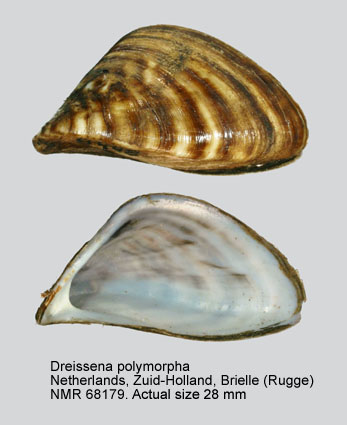
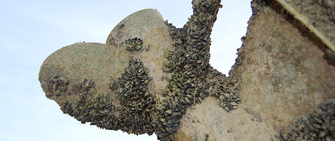
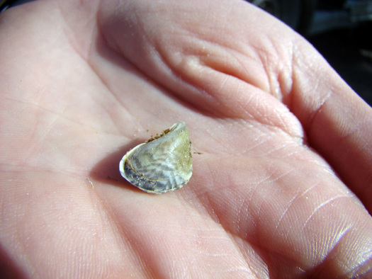

Aquatic Invasive Species (AIS) are invasive water-based organisms that can cause irreparable damage to our economy, environment, and recreation. The most infamous example of AIS is the Zebra mussel (Dreissena polymorpha), which has devastated freshwater ecosystems across the United States, but many other species present signficiant threats as well.
  Invasive species are foreign organisms that have encroached into new territory (usually through the help of humans) and disrupt the established order of a given ecosystem. With no natural predators in their new environment, invasive species are often allowed to reproduce easily and can out-compete native species for space and resources. These aspects especially threaten endangered and rare species, and may contribute to other species becoming endangered.
Aquatic invasive species additionally pose significant threats to our economy and recreation. Zebra mussels are capable of reproducing inside water pipelines and bursting these pipes from the inside out, causing millions of dollars in dam repairs every year. These costs are often externalized to consumers. Aquatic invasive species can encroach on our recreation by killing fish populations, restricting swimming, and causing damage to boats.
Learning about the biology and consequences of AIS and teaching others is the best way to make an impact! Please read our species profiles, join our email list, and visit any of the links in the Further Reading section of the page for additional information and resources.